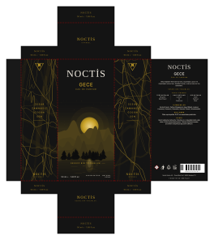
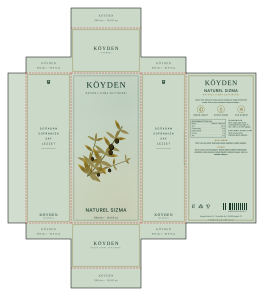
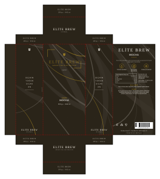
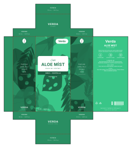
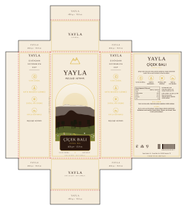
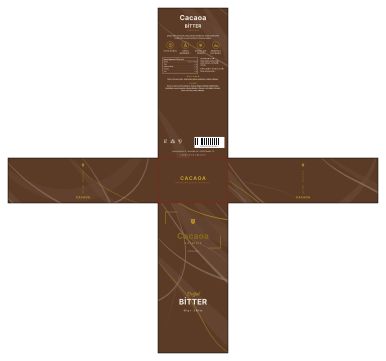
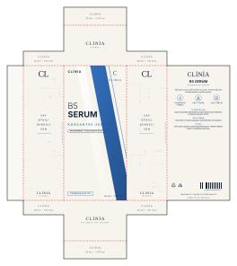
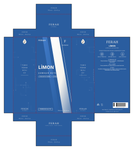
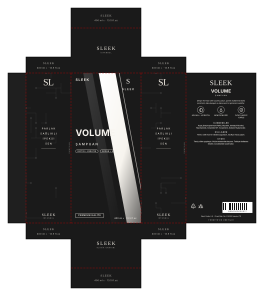

Paxolab — ön yüzler
Aynı ölçü (70×45×150 mm), farklı sektör ve brief. Değerlendirme sorusu: bu bir ajans işi gibi duruyor mu?

Noctis · Gece
parfüm · luxury · siyah · altın
dark-landscape · yerleşim 0 · dark-luxe

Köyden · Naturel Sızma
zeytinyağı · eco · koyu yeşil · altın
specimen-hero · yerleşim 0 · natural-warm

Elite Brew · Mocha
kahve · luxury · mermer · altın
marble-frame · yerleşim 1 · dark-luxe

Verda · Aloe Mist
krem · eco · yeşil · krem
diagonal-tech · yerleşim 1 · natural-warm
 Nox · Pulse Buds
Nox · Pulse Buds
kulaklık · modern · antrasit · turuncu
dark-landscape · yerleşim 0 · tech-dark

Yayla · Çiçek Balı
bal · classic · altın · sıcak
specimen-hero · yerleşim 2 · light-luxe

Cacaoa · Bitter
çikolata · luxury · kahve · altın
marble-frame · yerleşim 1 · dark-luxe

Clinia · B5 Serum
serum · minimal · beyaz · mavi
diagonal-tech · yerleşim 1 · clean-clinical

Ferah · Limon
deterjan · modern · mavi · beyaz
diagonal-tech · yerleşim 0 · tech-dark

Sleek · Volume
şampuan · modern · siyah · beyaz
ink-wash · yerleşim 0 · tech-dark